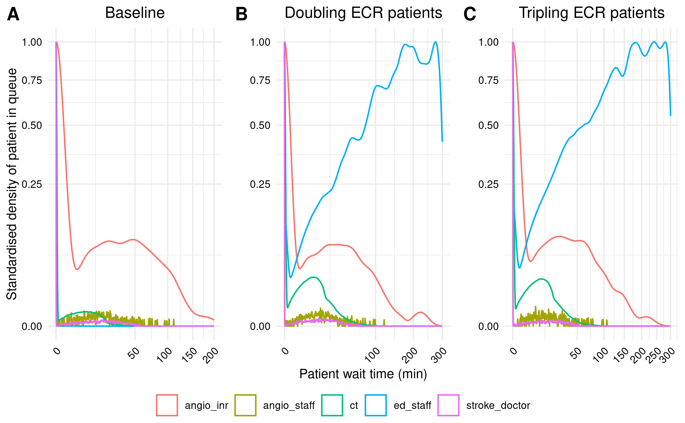

Supplementary figure then evaluation against guideliens. Total time used for reproduction: 24h 10m (60.4%).
09.00-09.07, 09.14-09.24, 09.36-09.40: Working on the supplementary figure
The supplementary figure consists of doubling and tripling the number of ECR patients.
“Since acquiring data for this study, the demands for ECR at our Comprehensive Stroke Service has doubled between 2018 and 19 and is predicted to triple by the end of 2019. We simulated these increased demands on the resource. As expected, the patient wait times do become longer, but the patterns of resource utilization remained unchanged, suggesting that the same bottlenecks affect throughput” Huang et al. (2019)
I’ve assumed this to mean we double and triple the number of ED arrivals (ed_pt, e.g.ed_pt=107700*2), but the output plots looked vastly different to the paper!

Wrong supplementary figure
I then realised I was mistaken, and that perhaps I should have interpreted this as being double and triple the ecr_pt (which is used when model decides whether patient needs ECR: PROB_ECR = ecr_pt / ais_pt). This looked right, and very similar to the paper, with the exception that my angioINR wait times curves peak much lower.
Untimed: Consensus on reproduction success
Shared with Tom and Alison. Tom and Alison both agreed with decisions (reproduced Figure 5 and in-text 1 and 2, and not other items).
10.30-10.50: Tidy and email author
Did a little bit of tidying (e.g. removed some old scenarioes from reproduction.qmd), and then emailed the corresponding author, to let them know the progress with this work, and to ask for any advice re: discrepancies, and whether they might have and be happy to share code that produces these figures.
Timings for reproduction
import syssys.path.append('../')from timings import calculate_times# Minutes used prior to todayused_to_date =1409# Times from todaytimes = [ ('09.00', '09.07'), ('09.14', '09.24'), ('09.36', '09.40'), ('10.30', '10.50')]calculate_times(used_to_date, times)
Time spent today: 41m, or 0h 41m
Total used to date: 1450m, or 24h 10m
Time remaining: 950m, or 15h 50m
Used 60.4% of 40 hours max
10.58-11.06: Badges
As mentioned in prior logbook entry, will now move on to evaluation stage.
Notes on the unmet (and why)
archive and id - only on GitHub
complete - didn’t have the scenario and figure code
structure - not sufficient to facilitate reuse (i.e. would want more commenting/docstrings/dcoumentation), and as structure was designed for application (but had to extract code to make the paper results)
documentation_… - no documentation provided
regenerated - wasn’t able to reproduce all the items
hour - took longer than an hour
11.07-11.16: STARS Framework
11.26-11.51, 12.00-12.17, 13.04-13.18: STRESS-DES
Uncertain
Item
My comments
STRESS-DES 1.2 Model outputs. Define all quantitative performance measures that are reported, using equations where necessary. Specify how and when they are calculated during the model run along with how any measures of error such as confidence intervals are calculated.
It does describe the measures, and how these are calculated, and so I have said it met these criteria, although I did find it hard to understand/calculate the relative probability of waiting, and would’ve benefited from further detail/equations
STRESS-DES 1.3 Experimentation aims. If the model has been used for experimentation, state the objectives that it was used to investigate. (A) Scenario based analysis – Provide a name and description for each scenario, providing a rationale for the choice of scenarios and ensure that item 2.3 (below) is completed.
I feel the paper does describe the scenarios clearly - my only hesitation is that I have been unable to successfully implement the exclusive use scenario - but that feels like a coding issue rather than a description issue? As, on the face of it, the article describes everything I need to know.
STRESS-DES 3.2 Pre-processing. Provide details of any data manipulation that has taken place before its use in the simulation, e.g. interpolation to account for missing data or the removal of outliers.
None provided, so presumed not applicable - but hard to say, as maybe there was just unmentioned. But as not possible to know either way, assumed not-applicable
ISPOR SDM 15 Is the model generalizability issue discussed?
Not sure if it is partially or fully met?
12 Is cross validation performed and reported
Is it not met or not applicable? Introduction: “In contrast to other healthcare fields, a resource-use optimization model has not been implemented
for comprehensive stroke services.” Huang et al. (2019)
13.19-13.33, 13.39-13.43: DES checklist derived from ISPOR-SDM
Timings for evaluation
import syssys.path.append('../')from timings import calculate_times# Minutes used prior to todayused_to_date =0# Times from todaytimes = [ ('10.58', '11.06'), ('11.07', '11.16'), ('11.26', '11.51'), ('12.00', '12.17'), ('13.04', '13.18'), ('13.19', '13.33'), ('13.39', '13.43')]calculate_times(used_to_date, times, limit=False)
Time spent today: 91m, or 1h 31m
Total used to date: 91m, or 1h 31m
Untimed: Working on research compendium stage
Some tidying up and sorting for research compendium stage inc.
Working on README for reproduction
Looking into options for unit testing in R…
Package testthat
use_testthat(). This initializes the unit testing machinery for your package. It adds Suggests: testthat to DESCRIPTION, creates the directory tests/testthat/, and adds the script tests/testthat.R.
use_test("functionname") to create matching testfile.
library(testthat), load_all(), test() to run the test. Tests will also run whenever check() package
rename_files("strsplit1", "str_split_one") to rename the R file and will also rename testthat file (which we also edit with new function name), to fit with convention of filename matching function name
Test files prefixed test_, keep data in files prefixed helper_
References
Huang, Shiwei, Julian Maingard, Hong Kuan Kok, Christen D. Barras, Vincent Thijs, Ronil V. Chandra, Duncan Mark Brooks, and Hamed Asadi. 2019. “Optimizing Resources for EndovascularClotRetrieval for AcuteIschemicStroke, a DiscreteEventSimulation.”Frontiers in Neurology 10 (June). https://doi.org/10.3389/fneur.2019.00653.